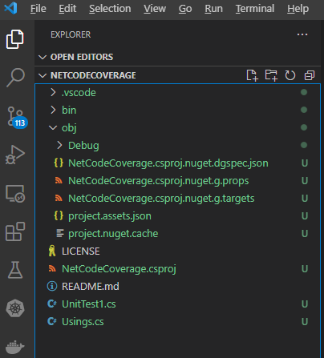
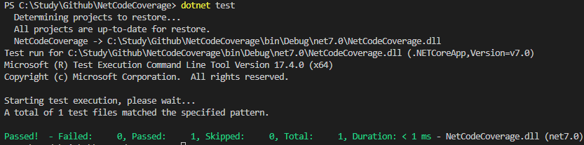
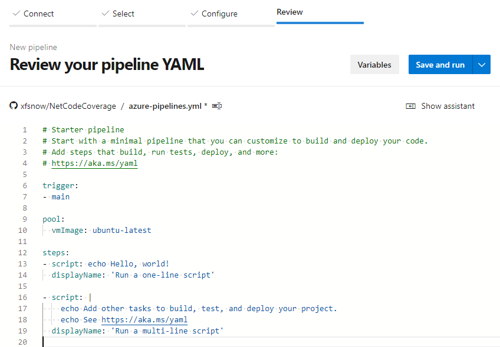
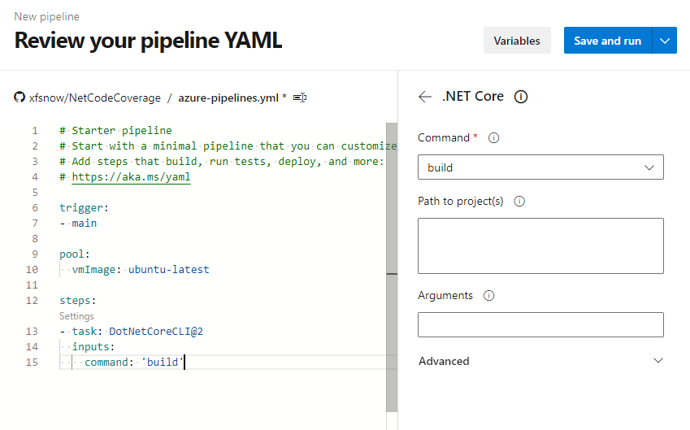
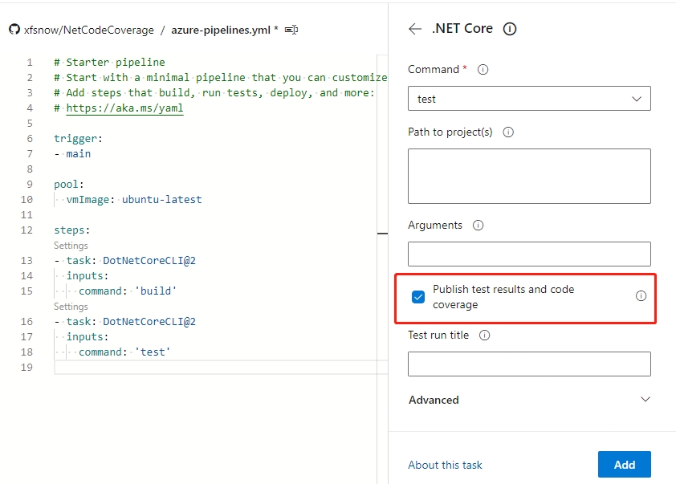
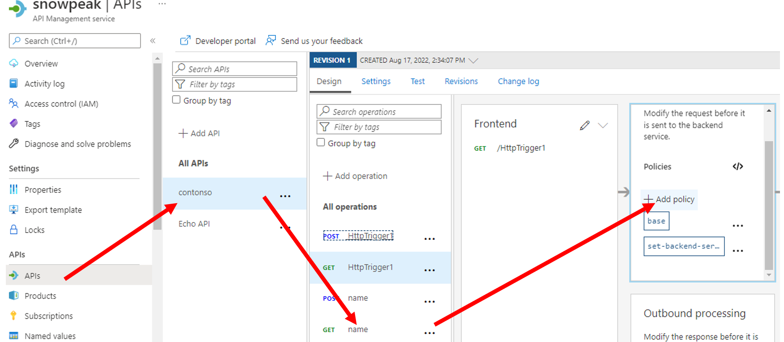
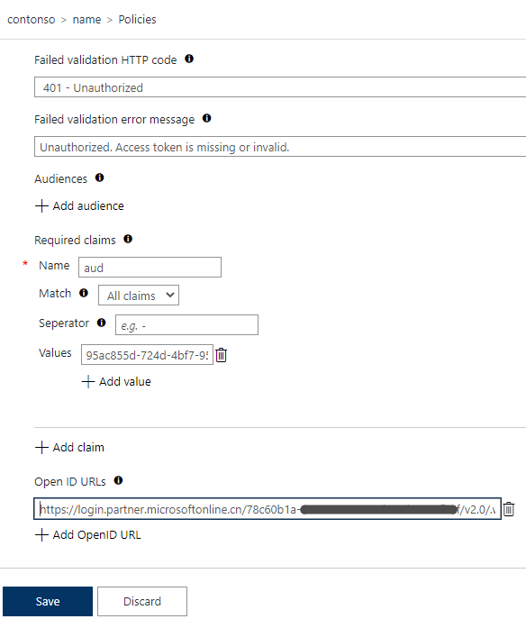

Azure Pipeline is a managed service in Microsoft's cloud-based DevOps toolset responsible for automated pipelines. It has comprehensive pipeline management capabilities and integrates easily with various testing, building, and deployment tools. Code coverage is an important metric in automated testing that measures the proportion of source code executed during testing compared to the total source code, indirectly measuring software quality. If a project's code is configured to export code coverage, Azure Pipeline can collect and store the corresponding data. However, by default, this data is only available for download and requires other tools for viewing. This article briefly introduces how to visually display code coverage in the Azure Pipeline console.
Preparing the Project Source Code
We initialize a standard .NET test project using dotnet new xunit. In VS Code, it looks like this:

To implement code coverage, the core configuration is in the NetCodeCoverage.csproj file in the following section:
<PackageReference Include="coverlet.collector" Version="3.1.2">
<IncludeAssets>runtime; build; native; contentfiles; analyzers; buildtransitive</IncludeAssets>
<PrivateAssets>all</PrivateAssets>
</PackageReference>
If it's not there, you can add it manually.
Then execute the dotnet build and dotnet test commands to see the following output:

The default created tests have no code logic, so they naturally pass. If there are issues, you can fork the source code directly from my GitHub.
https://github.com/xfsnow/NetCodeCoverage
Creating an Azure Pipeline
In the Azure DevOps console, find Pipeline under Pipelines and create a new YAML format pipeline by clicking New pipeline in the upper right corner.
For "Where is your code", select GitHub first. Connect to the GitHub repository you just committed.
On the Configure page, select Starter template. Finally, on the Review page, we see the following initial pipeline appearance:

Delete the existing 2 script tasks. Click Show assistant in the upper right corner, then click .NET Core in Tasks, as shown in the figure below, to first add a build task:

Then select test from the Command menu:

Note to keep "Publish test results and code coverage" checked, then add a test task.
Finally, add a publish code coverage task.
Finally, click the Save and run button in the upper right corner, and commit to the repository and execute as prompted.
Viewing Code Coverage Reports
After the pipeline execution is complete, we can view the code coverage report in the Azure Pipeline interface.
On the pipeline run details page, find the Tests tab and click to enter:

In the Tests tab, you can see the summary of test results, including the number of passed tests, failed tests, etc. Scroll down to see the Code Coverage section:

Click on the Code Coverage area to expand detailed information, including line coverage, branch coverage, and other metrics.
Configuring Code Coverage Thresholds
To ensure code quality, we can set code coverage thresholds in the pipeline. If the actual coverage is below the set threshold, the pipeline will fail.
In the Azure Pipeline YAML file, we can add the following configuration:
- task: DotNetCoreCLI@2
displayName: 'dotnet test'
inputs:
command: test
projects: '**/*.csproj'
arguments: '--configuration $(BuildConfiguration) --collect:"XPlat Code Coverage" -- DataCollectionRunSettings.DataCollectors.DataCollector.Configuration.Format=cobertura'
publishTestResults: true
failTaskOnFailedTests: true
- task: PublishCodeCoverageResults@1
displayName: 'Publish code coverage'
inputs:
codeCoverageTool: Cobertura
summaryFileLocation: '$(Agent.TempDirectory)/**/coverage.cobertura.xml'
failIfCoverageEmpty: true
Using SonarCloud for Further Analysis
In addition to Azure Pipeline's built-in code coverage functionality, we can also integrate SonarCloud to obtain more detailed code quality analysis.
First, create a project on SonarCloud, then add SonarCloud analysis tasks in Azure Pipeline:
- task: SonarCloudPrepare@1
inputs:
SonarCloud: 'SonarCloudConnection'
organization: 'your-organization'
scannerMode: 'MSBuild'
projectKey: 'your-project-key'
projectName: 'Your Project Name'
- task: SonarCloudAnalyze@1
- task: SonarCloudPublish@1
inputs:
pollingTimeoutSec: '300'
This way, you can view more detailed code quality reports in SonarCloud, including code coverage, duplicate code, code smells, and other metrics.
Summary
Through this article, we learned how to configure and display code coverage reports in Azure Pipeline. Code coverage is an important metric for measuring software testing quality. By integrating code coverage checks into the CI/CD pipeline, teams can continuously improve code quality.
The main steps include:
1. Configuring the coverlet.collector package in the project
2. Configuring test and code coverage publishing tasks in Azure Pipeline
3. Viewing code coverage reports in pipeline results
4. Optionally configuring coverage thresholds and integrating SonarCloud for deeper analysis
Through these practices, teams can better monitor and improve code quality, ensuring the reliability of software delivery.